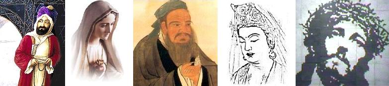

[왼쪽부터 마호메트, 마리아, 공자, 부처, 예수]
[이중에서 마리아와 공자는 종교의 창시자가 아니다]
★종교에 대한 내 멋대로의 해석.
이 테마로 블로그를 쓰기 위해 몇일째 종교와 씨름하고 있다.
어차피 진실이 아닌 사견을 써내려갈 터이지만 읽는이로 하여금 순 억지로 보이고 싶지는 않은 것이 내 본심이다.
★나는 기독교인이었다.
나는 고등학교때 기독교를 종교로 갖게 되었고 수년간 교회를 다녔다.
나름대로 독실한 기독교 신자였다고 생각한다.
하지만 나는 어렸을때부터 단학을 공부하신 아버지의 영향을 받은 터라 이미 근본이 탈 종교에 가까웠다.
아버지께서는 내게 이렇게 말씀하셨다.
'종교란 산 정상을 오르는 여러 갈래의 다른 길이다. 천천히 돌아가는 길도 있고 곧장 가로질러 올라가는 길도 있는것 뿐이다.'
아버지는 단학이 정상을 향해 곧장 가로질러 가는 길이라고 생각하신것 같았다.
★종교 매니아
내가 처음부터 여러 종교에 관심을 갖고 있었던것은 아니다. 나도 일반적인 사람들처럼 기독교는 예수를 믿고 천주교는 마리아의 이름으로 기도하며 불교는 부처에게 빈다는 식의 단편적이고 부정확한 지식을 알고 있을 뿐이었다.
사실 종교인은 매니아다.
진정한 매니아는 그 분야에 통달한 달인(Master)에 가깝다.
하지만 대다수의 종교 매니아들은 종교 자체에 대해 관심을 갖지 않는다. 아니 심지어는 자신들의 종교 조차 깊이있게 알지 못하는것 같다.
진정한 게임 매니아들은 여러 장르에 걸쳐 게임을 섭렵하며 나름대로의 장단점을 구별해낸다.
반면 맹목적인 게이머들은 자신이 좋아하는 게임이 최고라고 떠들어대며 유사 게임들을 비하한다. 하지만 이중 상당수는 다른 게임을 제대로 해보지 못한 사람들이거나 다른 게임에 적응하지 못한 사람들이기 쉽다.
어차피 종교는 여러가지를 비교해서 선택하는 것이 아니다.
과학적, 논리적으로 비교 분석해서 옳은 길을 찾아가는것도 아니다.
그래도 자기 자신의 종교만큼은 제대로 아는것이 좋지 않을까?
★진실과 궤변
나는 이 곳에서 '진실'을 밝히려고 하는것이 아니다.
다만 내가 갖게된 종교에 대한 의문을 내 나름대로의 해석으로 풀이해볼 생각이다.
부탁하건데 여러분의 종교와 무관하게 재미있는 궤변 정도로 받아들이자.
그것이 모두의 건강에 이롭다.